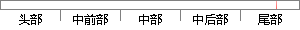

以及图像拼接 的过程 ，最后给出 实例 测试，
片段位置图

相似结果
相似片段：
的说明，其中系统设置主要包括视频属性设置、串口设置、运动参数设置以及系统默认约定等，而系统操作则介绍系统软件界面、操作流程、状态显示以及图像拼接等，最后给出测试实例以及性能指标，并与Photoshop的图像拼接进行比较。 6.1 系统设置 6.1.1视频属性设置 视频属性设置用于设置摄像头的拍照参数，主要包括： 视频输
| 对比库： | WriteCheck云资源库 |
| 来源： | www.yangsky.com 查看来源 |
| 发布时间： | 2014-01-18 |
| 相似率 | 87.5% （严重抄袭） |